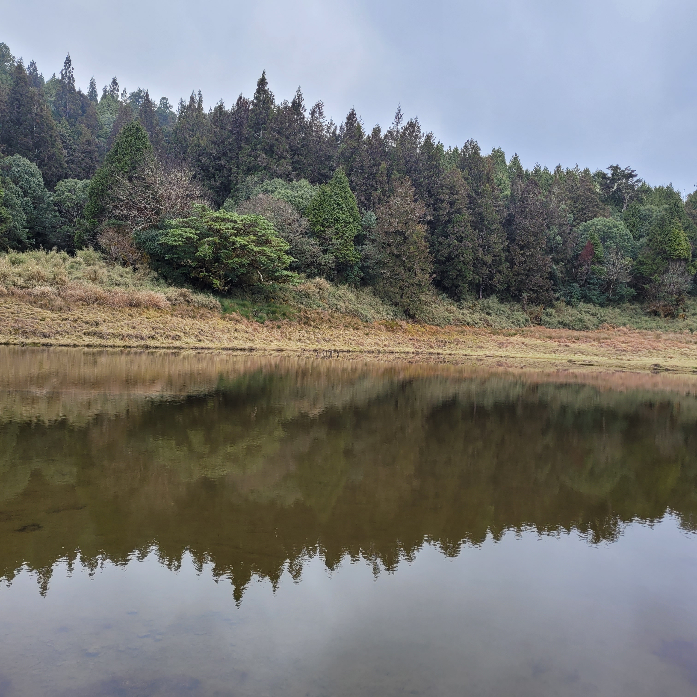
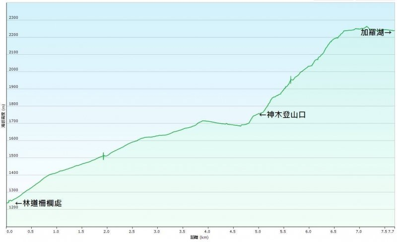
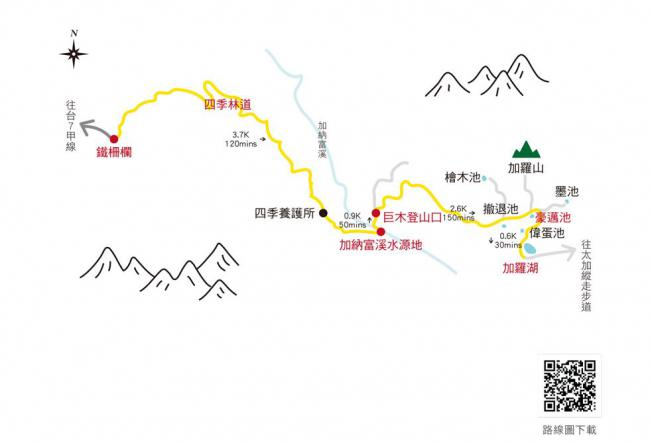

出發前才知道要爬的是加羅湖不是嘉明湖
登山新手的挑戰

加羅湖簡介 Introduction
加羅湖位於宜蘭縣大同鄉四季村、中橫北支線加羅山區，坐落於中央山脈南湖大山和三星山的山地交會點，里洛山北到太平山之間的陵脈上，因為鄰近加羅山故名為加羅湖，湖泊呈現為南北走向，是加納富溪的源頭；加羅湖標高為2242公尺，是一個湖群，因此除了加羅湖外還有撤退池、豪邁池、偉蛋池、墨池、日湖、月湖、天池、檜木池、水池、綠池等眾多高山湖泊，目前發現共有18個；在眾多的高山湖泊中以加羅湖的面積最為廣闊，其長度約為300公尺，寬約150公尺、深度約15公尺。
加羅湖的傳說－『散落的珍珠』
加羅湖的傳說十分夢幻，相傳在遠古時代有一位貌美的仙女，當他正在梳妝打扮的同時，一個閃神不小心將桌上的明鏡給打破了，而亮麗如鑽石般的碎片便粒粒如雨下般的灑落於加羅山區，交織成了為數眾多、美如幻境的湖泊群；加羅湖群水時清澈、光線充足，也因為其週遭的美麗景致被稱之為『散落的珍珠』。
Jialuo Lake is located in Siji Village, Datong Township, Yilan County, and Jialuo Mountain Area of the North Branch Line of Zhongheng. Called Garo Lake, the lake presents a north-south direction and is the source of the rich stream in Ghana; Garo Lake is 2242 meters above sea level and is a lake group. Therefore, in addition to Garo Lake, there are Retreat Pool, Haomai Pool, Weidan Pool and Mochi. , Sun Lake, Moon Lake, Tianchi, Cypress Pond, Shui Pond, Green Pond and many other alpine lakes, a total of 18 have been found so far; among the many alpine lakes, Jialuo Lake has the largest area, with a length of about 300 meters and a width of about 300 meters. About 150 meters, about 15 meters deep.
The legend of Lake Garo - "The Scattered Pearls"
The legend of Garo Lake is very dreamy. According to legend, in ancient times, there was a beautiful fairy. While he was dressing up, a Shining God accidentally broke the mirror on the table, and the bright diamond-like fragments were like small pieces. The rain falls on the Garo Mountains, interweaving into numerous lakes that are as beautiful as a fantasy; the Garo Lakes are clear and well-lit, and are also called “scattered pearls” because of the beautiful scenery around them.
資料來源：https://www.travelking.com.tw/tourguide/scenery103360.html
近代登山史中加羅湖的重新被發現 Rediscovered
在1987年元月，當時台大登山社5名社員組成了加羅湖與加羅山首登勘察隊，在加羅山西南稜，也就是靠近現今撤退池的附近，誤走山徑，因而沒能登上加羅山，後經紮營，隔日回撤重新出發後才找著正確的路，並且成功進入加羅湖區。當晚他們在第一個遇見的盆地水池畔紮營，並將此池命名為「加羅湖」。不過，當第二天繼續前進而與更寬闊的湖面相遇時，隊員們就改變了心意，將「加羅湖」改賦予眼前的大池(即現今的加羅湖)，而昨天誤入山徑，差點以撤退收場，紮營的小池就另給了一個帶點紀念行程一波三折意味的名字，「撤退池」。
In January 1987, five members of the National Taiwan University Mountaineering Club formed the first climbing survey team of Jialuo Lake and Jialuo Mountain. At the southwest edge of Jialuo Mountain, that is, near the current retreat pool, they mistakenly took the mountain trail and failed to climb the Jialuo Mountain. Luoshan, after setting up camp, retreated the next day and set off again to find the right way, and successfully entered the Garo Lake area. That night they camped at the first basin pool they encountered, which they named “Lake Garo”. However, when they continued to move forward the next day and encountered a wider lake, the team members changed their minds and gave the “Jaro Lake” to the big pond in front of them (that is, the current Jia Luo Lake). They strayed into the mountain trail yesterday and almost After the retreat ended, Koike, who was camping, gave another name, “Retreat Pond”, which was a little bit of a commemorative trip with twists and turns.
行程規劃 Schedule Plan


建議兩天行程，當天來回會很辛苦，尤其宜蘭山區極易下雨，可能抵達時下午霧氣擋住加羅湖美景，隔日一早霧氣才飄散
第一天：四季林道→鐵柵欄→加納富溪→巨木登山口→撤退池→偉蛋池→加羅湖
第二天：加羅湖→偉蛋池→撤退池→巨木登山口→加納富溪→鐵柵欄→四季林道
It is recommended to travel for two days. It will be very hard to go back and forth on the same day, especially in the mountainous area of Yilan. It is very easy to rain. It may be blocked by the fog in the afternoon when you arrive, and the fog will not drift away until the next morning.
Day 1: Four Seasons Forest Road→Iron Fencer→Ghana Fuxi→Jumu Mountain Pass→Retreat Pool→Weidan Pool→Jaro Lake
Day 2: Jialuo Lake → Weidan Pool → Retreat Pool → Jumu Mountain Pass → Ghana Fuxi → Iron Fence → Four Seasons Forest Road
入山證申請 Apply for entering the mountain
出發前5日至30日至內政部警政署網站申請，或前往加羅湖當日先至宜蘭縣警察局三星分局、大同分駐所、太平山派出所、明池派出所、蘇澳分局、澳花派出所、碧候派出所，任一處辦理入山證。（資料來源：宜蘭縣政府警察局）
Apply before 5 to 30 days from the links.
行前準備 Preparation
- 行動糧（高熱量巧克力、能量棒、麵包…）foods (high-calorie chocolate, energy bars, bread…)
- 建議至少2000cc的水 At least 2000cc of water is recommended
- 鹽糖 (電解質補給) Salt candy (electrolyte replenishment)
- 保暖衣物（山上非常冷，尤其我去的時間到午夜溫度是-2度Ｃ，還有建議襪子穿兩層厚度）Warm clothes (it is very cold on the mountain, especially when I go to midnight, the temperature is -2 degrees C, and it is recommended to wear two layers of socks)
- 登山杖 Alpenstock
- 雨靴（建議高筒，很多地方泥濘不堪）Rain boots (high tube is recommended, many places are muddy)
- 帳篷、睡墊 Tent, sleeping pad
- 衛生用品 Tissue paper
- 急救用品 mergency supplies
(PS：如果是新手，建議找協作訂餐、租借帳篷及睡墊，減少背包的重量）
(PS：建議洋蔥式穿法，爬行過程會非常炎熱，因此穿脫方便為宜）
(PS: If you are a novice, it is recommended to find cooperative ordering, rent tents and sleeping pads, and reduce the weight of the backpack)
(PS: It is recommended to wear the onion style, the crawling process will be very hot, so it is appropriate to put on and take off easily)
加羅湖路徑詳述 Routes in detail
起先搭接駁抵達著名紅色柵欄的登山口
Arrived the climbing entrance of the red fence
入柵欄後，開始行走四季林道，路上都是大小石頭，要小心打滑
After entering the fence, start walking on the “Four-Season Forest Road”. The road is full of large and small stones, so be careful of slipping
走近3.7K就會抵達四季養護所（廢棄工寮），上面被別人寫著許多到此一遊
Approaching 3.7K, you will arrive at the “Four Seasons Nursing Center” (abandoned labor camp)
再走一小端路就抵達加納富溪，最後的取水點
After a short walk, you will arrive at Ghana Phu Creek.

馬上就抵達巨木登山口，是此處最巨大的神木，感受大自然的鬼斧神工
Immediately arrive at the entrance of the giant tree, which is the largest sacred tree here, and feel the magic of nature.

從此之後都是陡上的路徑，有近2.9K，沿路樹木被綠色植披覆蓋，猶如夢幻世界
Since then, it has been a steep path with nearly 2.9K. The trees along the road are covered with green plants, like a dream world.
抵達1.9K處時建議稍作停留，此後將難以收到訊號，路途也變得較艱辛
It is recommended to stop for a while when you reach 1.9K, after that it will be difficult to receive signals and the road will become more difficult.
映入眼簾就是芒草區，建議長袖長褲避免刮傷
Long-sleeved trousers are recommended to avoid scratches.
由於我們行走前一週連日下雨，地面非常泥濘，腳一陷入，哭著找媽媽
The ground is very muddy
抵達偉蛋池，那時還有霧氣，猶如仙境
Arrived at Weidan Pond, there was still fog, like a fairyland
在行走一段路程即抵達加羅湖，美麗的景色，建議先換上衣物再探索湖周遭，避免著涼
After walking for a while, you will arrive at Garo Lake. It is a beautiful scenery. It is recommended to change clothes before exploring around the lake to avoid catching a cold.
協作準備的晚餐飯菜，大家的評價都滿好吃，我也很滿意，吃完可以在承裝，千萬不要浪費
I’m really satisfied with the dinner.
夜晚的各位等待裝飯，氣溫也逐漸降低
Temperature is gradually dropping.
夜晚美麗的星空
Beautiful night sky.
清晨的加羅湖，很可惜到離開前都還是濃濃霧氣
Unfortunately, there is still thick fog in the morning before leaving.
總結 Summary
自己本身是登山菜雞，這是以個人角度做的評分，覺得難度中上，全程9Ｋ，來回18K，在來之前要做好訓練，不要低估了！
This is a rating from a personal point of view. I feel that the difficulty is medium, the whole process is 9K, and the back and forth is 18K. Before coming, you must do a good job of training, don’t underestimate it!
難易度 Difficulty ： ◼️ ◼️ ◼️ ◼️ ◻️
危險度 Risk ： ◼️ ◼️ ◼️ ◼️ ◻️
值得程度 Worth rate ： ◼️ ◼️ ◼️ ◼️ ◼️